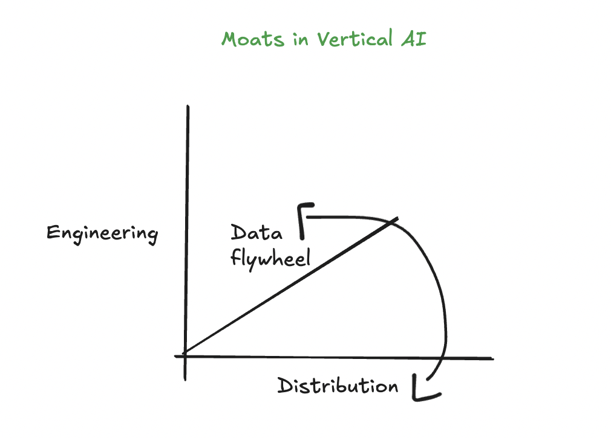

September 15th, 2024
This post is part of my "The Next Frontiers" series where I delve deeper into a technology that I think will be pervasive across society in 5 to 15 years.
This post focuses on the personalization of AI models. Right now, we have these uniform mega-models that are hosted in the cloud, running in application layer products. For each application, the weights stay the same, meaning the model itself is the same for application A and application B. Perhaps this means generality, but it can also be a limitation. Instead of having a 175B-parameter model that is deployed on application A and application B, what if we have separate LoRa-adapted, fine-tuned models for application’s A and B respectively.
Computational gains: due to Moore’s law, training ML models will become more efficient and less expensive per parameter. This enables larger models to be trained at a cheaper cost. Perhaps the real benefit of the increasing computational and hardware efficiencies is realized in the inference realm. It is not far fetched that we can have \(175\)B parameter models running on device in the near future.
Research and algorithmic gains: The advent of scaling laws, the scaling hypothesis, and the bitter lesson all point to the fact that methods that leverage computation efficiently will perform better in the long run. This implies that the larger the model, the better it will perform. However, recent algorithmic advances add another tangent to think about. OpenAI’s strawberry algorithm scales inference-time compute to be able to reason better. Notably, this advancement is detached from an increasing in model size and training compute: it was all done on the inference side. The conseqouence of this is that smaller models, embedded with these newfound reasoning capabilities due to inference-time compute, might result in the adoption of smaller models across the application layer. More specificially, reasoning increases might lead to applications training their own 1B-parameter models instead of relying on the ChatGPT 175B+-model api. Another example of algorithmic development is that of State Space Models (SSM’s). The premise behind these models is that they scale linearly wrt the input size instead of quadratically like transformers do. Cartesia, the company developing these models for real-world use, thinks that this development will enable ubiqitious intelligence at scale, on any device.
Middle-layer developments: include techniques such as RAG. Thinking of layers, one can imagine the base layer as the OpenAI API model, the middle layer as something like RAG, and the application (final) layer as the product which is offered to the user. These middle layers essentially try to make the models more tailored for application use. For some reasons that I cannot quite pin down yet, I am slightly bearish on these seeing any long-term adoption. I think this is due to the previous two points: if we ride the waves of (1) computational advances and (2) reasoning and algorithmic advances, middle layer technologies lose their moat and become unnessary: what is the point of RAG if we can have a small model training on the user’s documents themselves? I do however think there exists a \(n\)-to-\(m\) year latency where \(n\) is upper bounded by \(~2\) and \(m\) is upper bounded by \(~10\) in which middle layer technologies like RAG stay relevant towards the goal of personalization of AI models.
Some remaining questions:
Conlusion: All of the above questions and comments remain pain points for getting AI models to be more personalized. Though, the resulting increase in algorithmic and computational advances might lead us to a world where we all have a small model living in our device, trained on our own data. One that understands us a bit better. A more personalized AI model. A second brain of some sorts.
Visually speaking, here is how I think about vertical AI:

with this being said…